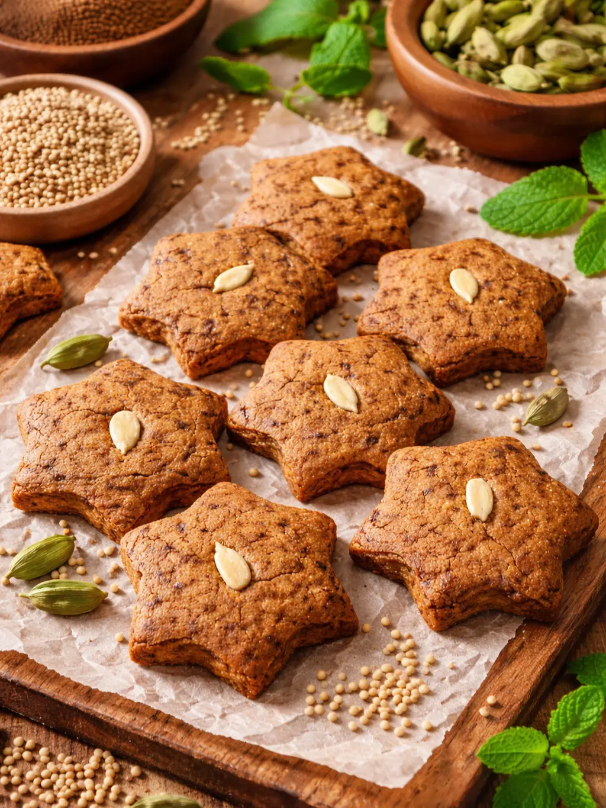
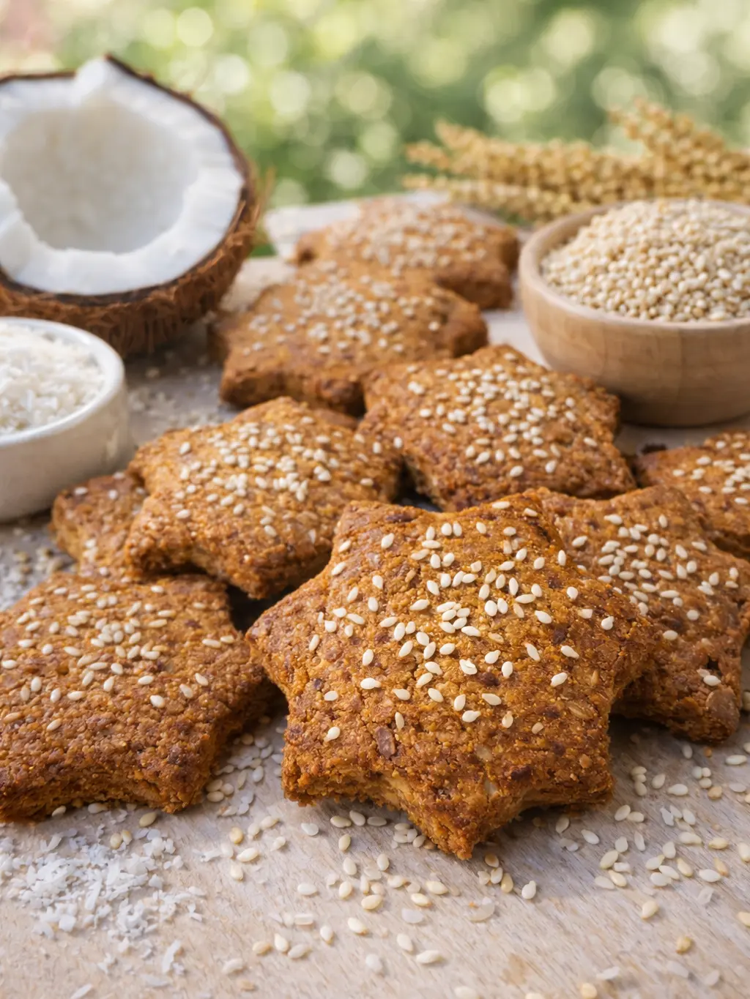
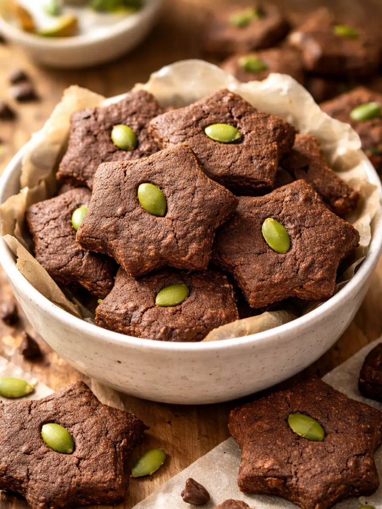

Where millets meet great taste
Rich, flavourful baked treats made with wholesome millets, naturally sweetened with jaggery and baked in pure desi ghee.
No maida • No palm oil • No added refined sugar • No added preservatives • No added colour
Homemade and baked in small batches.
✔️ Thoughtfully baked, one flavour at a time.

Earthy bajra with warm cardamom and gentle jaggery sweetness. Crisp outside, soft inside—perfect with chai.
View Product →
Fibre-rich jowar paired with coconut for a light, aromatic bite. Balanced flavour without being oily or overly sweet.
View Product →
Deep cocoa flavour blended with calcium-rich ragi. A mindful way to satisfy chocolate cravings.
View Product →⚠️ Our cookies are not gluten-free as they contain a small amount of whole wheat (atta).
MILASTY began in my home kitchen with a question I had lived for years— why is it so hard to find food that tastes good and still feels right to eat?
After stepping away from a demanding corporate routine that affected my health, I realised how often we’re forced to choose: healthy food that feels boring, or tasty food full of maida, refined sugar, and palm oil. Most days, compromise felt unavoidable.
I started baking healthier cookies at home—first for my husband, to help him get through long workdays without relying on junk food. Then for myself. Soon, friends, colleagues, and neighbours became our most honest testers. We baked, tasted, failed, and baked again.
What worked was going back to what we trust—millets, jaggery, and desi ghee.
Today, every MILASTY cookie is still made the same way: familiar ingredients, no shortcuts, and a lot of care.
Because good food shouldn’t feel like a compromise.
It should feel like home.
— Founded by Anwesha, engineer turned food entrepreneur
“These don’t taste like typical healthy cookies. You can really taste the jaggery and ghee.”
— Office colleague“Perfect with evening tea. Not too sweet, and very filling.”
— Society customerNo. MILASTY cookies are made using wholesome millets and a small amount of whole wheat atta — we do not use refined flour (maida).
No. MILASTY products are naturally sweetened with jaggery, not refined white sugar.
Yes. Our cookies are baked using pure desi cow ghee, with a small amount of rice bran oil for balance.
No. We bake in small batches and do not add preservatives, artificial colours, or flavour enhancers.
Yes. MILASTY products are baked in small batches, often on-demand, so customers receive fresh cookies made with care rather than mass-produced stock.
You can order directly through WhatsApp. We currently deliver across Greater Noida, Noida, and Delhi NCR.
MILASTY cookies are made with familiar home-style ingredients and balanced sweetness, making them a thoughtful snack choice for families.
MILASTY cookies are made with millets, which naturally make them more crunchy and crispy than regular maida cookies. We do not recommend them for children below 6 years of age. For older children, please serve only in small pieces under supervision.
Yes. Our cookies contain a small quantity of whole wheat (atta) and milk powder, so they are not gluten-free or dairy-free.
Our cookies are best enjoyed within 45 days from the date of manufacture when stored in a cool, dry place away from moisture.